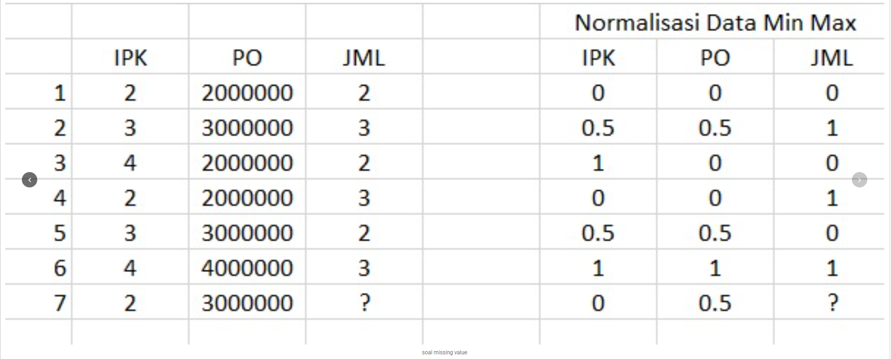
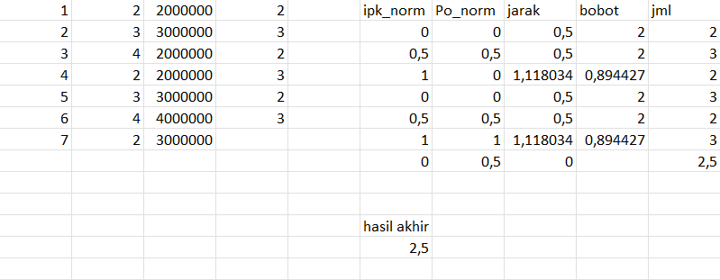

pertemuan 5#
1. Proyek Missing Values Inputation + Materi Normalisasi data#
soal missing value#

Jawaban dengan WKNN MANUAL (EXCEL)#

Laporan proses penyelesaian Missing Values menggunakan algoritma Weighted K-Nearest Neighbors (WKNN), baik secara perhitungan manual matematis maupun implementasi komputasional menggunakan Python.BAGIAN 1: Perhitungan Manual (Berdasarkan Tabulasi Data)#
Berdasarkan data perhitungan yang telah divalidasi, berikut adalah penjabaran langkah demi langkah proses imputasi nilai pada atribut JML (Data ke-7) menggunakan algoritma WKNN dengan \(K=4\).
1. Tahap Persiapan (Normalisasi)#
Sebelum menghitung jarak, rentang nilai atribut IPK dan PO diseragamkan ke dalam skala 0 hingga 1 menggunakan metode Min-Max Scaling.
Tujuan: Mencegah atribut dengan rentang nilai besar (seperti PO) mendominasi perhitungan jarak terhadap atribut dengan rentang nilai kecil (IPK).
Dari hasil normalisasi, data target (Data ke-7 yang nilai JML-nya kosong) memiliki titik koordinat:
IPK = 0
PO = 0.5
Titik koordinat inilah yang menjadi acuan pengukur jarak spasial ke observasi historis lainnya.
2. Tahap Inti Perhitungan WKNN#
A. Komputasi Jarak (Euclidean Distance)#
Algoritma menggunakan metrik jarak Euclidean untuk mengukur tingkat kedekatan antara data target dengan data historis (Baris 1 sampai 6).
Rumus: $\(d = \sqrt{(IPK_i - IPK_{target})^2 + (PO_i - PO_{target})^2}\)$
Contoh Perhitungan (Baris 1): Jarak dari target (0; 0.5) ke baris 1 (0; 0) adalah: $\(d = \sqrt{(0-0)^2 + (0-0.5)^2} = \sqrt{0 + 0.25} = 0.5\)$
Berdasarkan perhitungan keseluruhan, diperoleh jarak terdekat adalah 0.5 dan jarak terjauh adalah 1.118034.
B. Kalkulasi Pembobotan (Weight)#
Karakteristik utama WKNN adalah memberikan bobot (signifikansi) yang lebih besar kepada observasi tetangga yang jaraknya lebih dekat.
Rumus: $\(w = \frac{1}{d}\)$
Penerapan:
Data dengan jarak terdekat (
0.5) mendapatkan bobot maksimal, yaitu 2 (\(1 / 0.5\)).Data dengan jarak lebih jauh (
1.118034) mendapatkan bobot lebih kecil, yaitu 0.894427 (\(1 / 1.118034\)).
C. Seleksi K-Tetangga Terdekat#
Dari hasil komputasi jarak, terdapat 4 observasi yang memiliki jarak identik paling dekat (seri di angka 0.5). Oleh karena itu, parameter ditetapkan pada \(K = 4\).
Empat tetangga terdekat yang diekstraksi beserta atribut JML aslinya adalah:
Baris 1 (Bobot = 2, JML = 2)
Baris 2 (Bobot = 2, JML = 3)
Baris 4 (Bobot = 2, JML = 3)
Baris 5 (Bobot = 2, JML = 2)
D. Prediksi Akhir (Weighted Average)#
Langkah final adalah memprediksi nilai JML pada data target dengan menghitung rata-rata terbobot (weighted average) dari nilai JML keempat tetangga terdekatnya.
Rumus Prediksi WKNN: $\(Prediksi = \frac{\sum_{i=1}^{K} (w_i \times JML_i)}{\sum_{i=1}^{K} w_i}\)$
Perhitungan: $\(Prediksi = \frac{(2 \times 2) + (2 \times 3) + (2 \times 3) + (2 \times 2)}{2 + 2 + 2 + 2}\)\( \)\(Prediksi = \frac{4 + 6 + 6 + 4}{8}\)\( \)\(Prediksi = \frac{20}{8} = 2.5\)$
Kesimpulan Manual: Prediksi atribut JML untuk data ke-7 adalah 2.5.
BAGIAN 2: Implementasi Komputasional Menggunakan Python#
Berikut adalah otomasi algoritma WKNN menggunakan library numpy untuk mengoptimalkan operasi aljabar linear secara efisien.
Full Code Python#
import numpy as np
# Data normalisasi yang telah ada (baris 1-6) dan target (baris 7)
X_train = np.array([
[0, 0], # Baris 1
[0.5, 0.5], # Baris 2
[1, 0], # Baris 3
[0, 0], # Baris 4
[0.5, 0.5], # Baris 5
[1, 1] # Baris 6
])
y_train = np.array([2, 3, 2, 3, 2, 3]) # Nilai JML
X_target = np.array([0, 0.5]) # Baris 7 (Missing)
def wknn_imputation(X_train, y_train, target, k=4):
# 1. Hitung jarak Euclidean
distances = np.sqrt(np.sum((X_train - target)**2, axis=1))
# 2. Dapatkan indeks K terdekat
nearest_indices = np.argsort(distances)[:k]
# 3. Ambil jarak dan nilai (y) dari K terdekat
nearest_distances = distances[nearest_indices]
nearest_values = y_train[nearest_indices]
# 4. Hitung bobot (1 / jarak). Ditambah epsilon kecil agar tidak dibagi nol
weights = 1.0 / (nearest_distances + 1e-9)
# 5. Hitung prediksi (weighted average)
prediction = np.sum(weights * nearest_values) / np.sum(weights)
return distances, nearest_indices, prediction
distances, indices, predicted_JML = wknn_imputation(X_train, y_train, X_target, k=4)
print("Jarak ke seluruh data:", np.round(distances, 3))
print(f"Indeks {len(indices)} tetangga terdekat (0-indexed):", indices)
print("Prediksi nilai JML untuk Baris 7:", predicted_JML)
Hasil Eksekusi Program (Output) Berdasarkan eksekusi program di atas, berikut adalah output yang dihasilkan pada konsol:
Jarak ke seluruh data: [0.5 0.5 1.118 0.5 0.5 1.118]
Indeks 4 tetangga terdekat (0-indexed): [0 1 3 4]
Prediksi nilai JML untuk Baris 7: 2.5000000000000004
Hasil komputasi mesin menggunakan Python ini memvalidasi keakuratan perhitungan manual yang dilakukan sebelumnya. Nilai prediksi akhir yang didapatkan adalah 2.5000000000000004 (dibulatkan menjadi 2.5), yang persis sama dengan hasil rata-rata terbobot (weighted average) pada perhitungan tabulasi manual. Kelebihan angka di belakang koma merupakan hal yang wajar akibat presisi floating point pada mesin komputasi.
—–#
2. Normalisasi data (materi)#
Apa itu normalisasi data?#
Normalisasi data adalah teknik prapemrosesan (preprocessing) yang digunakan untuk mengubah nilai-nilai fitur dalam dataset agar berada pada skala yang sama.
Mengapa ini penting? Algoritma Machine Learning (seperti K-Nearest Neighbors, SVM, atau K-Means) menghitung jarak antar data. Jika ada fitur dengan rentang nilai jutaan (misalnya Gaji/Pendapatan) dan fitur lain dengan rentang satuan (misalnya IPK), algoritma akan menganggap fitur Gaji jauh lebih penting. Normalisasi mencegah bias ini dan membuat model belajar dengan lebih adil dan efisien.
Dataset Studi Kasus#
Kita akan menggunakan dataset berikut untuk mendemonstrasikan ketiga metode normalisasi. Data ini berisi nilai ipk (skala satuan), Po (skala jutaan), dan JML (skala satuan).
no |
ipk |
Po |
JML |
|---|---|---|---|
1 |
2 |
2000000 |
2 |
2 |
3 |
3000000 |
3 |
3 |
4 |
2000000 |
2 |
4 |
2 |
2000000 |
3 |
5 |
3 |
3000000 |
2 |
6 |
4 |
4000000 |
3 |
7 |
2 |
3000000 |
2.5 |
(Catatan: Kolom no diabaikan dalam perhitungan karena hanya berfungsi sebagai indeks).
Macam macam normalisasi data dan contoh hasil normalisasi data sekaligus Menggunakan library sklearn untuk melakukan normalisasi data dan membuat fungsi sendiri#
1. Min-Max Scaling (Normalization)#
Metode ini mengubah data sedemikian rupa sehingga rentang nilainya berada di antara 0 dan 1. Nilai terkecil diubah menjadi 0, dan nilai terbesar diubah menjadi 1. Sangat cocok digunakan jika kita tahu batas atas dan bawah dari data kita, dan distribusi datanya tidak mengikuti distribusi normal (Gaussian).
Rumus: $\(x_{new} = \frac{x - x_{min}}{x_{max} - x_{min}}\)$
Kode Implementasi Min-Max Scaling#
import pandas as pd
from sklearn.preprocessing import MinMaxScaler
# 1. Menyiapkan Data
data = {
'ipk': [2, 3, 4, 2, 3, 4, 2],
'Po': [2000000, 3000000, 2000000, 2000000, 3000000, 4000000, 3000000],
'JML': [2, 3, 2, 3, 2, 3, 2.5]
}
df = pd.DataFrame(data)
# CARA 1: Menggunakan Scikit-Learn
scaler = MinMaxScaler()
df_sklearn = pd.DataFrame(scaler.fit_transform(df), columns=df.columns)
# CARA 2: Membuat Fungsi Manual
def minmax_manual(dataframe):
return (dataframe - dataframe.min()) / (dataframe.max() - dataframe.min())
df_manual = minmax_manual(df)
print("--- Hasil Min-Max Sklearn ---")
print(df_sklearn.round(2))
print("\n--- Hasil Min-Max Manual ---")
print(df_manual.round(2))
--- Hasil Min-Max Sklearn ---
ipk Po JML
0 0.0 0.0 0.0
1 0.5 0.5 1.0
2 1.0 0.0 0.0
3 0.0 0.0 1.0
4 0.5 0.5 0.0
5 1.0 1.0 1.0
6 0.0 0.5 0.5
--- Hasil Min-Max Manual ---
ipk Po JML
0 0.0 0.0 0.0
1 0.5 0.5 1.0
2 1.0 0.0 0.0
3 0.0 0.0 1.0
4 0.5 0.5 0.0
5 1.0 1.0 1.0
6 0.0 0.5 0.5
2. Standardization (Z-Score)#
Metode ini memusatkan data agar memiliki rata-rata (mean) sama dengan 0 dan standar deviasi sama dengan 1. Jika nilai hasil normalisasi positif, berarti data tersebut berada di atas rata-rata. Jika negatif, berarti di bawah rata-rata. Sangat cocok untuk algoritma yang mengasumsikan data terdistribusi normal (seperti Regresi Linear atau Logistic Regression).
Rumus: $\(z = \frac{x - \mu}{\sigma}\)\( *(di mana \)\mu\( adalah rata-rata, dan \)\sigma$ adalah standar deviasi)*
Kode Implementasi Standardization#
import pandas as pd
from sklearn.preprocessing import StandardScaler
# 1. Menyiapkan Data
data = {
'ipk': [2, 3, 4, 2, 3, 4, 2],
'Po': [2000000, 3000000, 2000000, 2000000, 3000000, 4000000, 3000000],
'JML': [2, 3, 2, 3, 2, 3, 2.5]
}
df = pd.DataFrame(data)
# CARA 1: Menggunakan Scikit-Learn
scaler = StandardScaler()
df_sklearn = pd.DataFrame(scaler.fit_transform(df), columns=df.columns)
# CARA 2: Membuat Fungsi Manual
def standard_manual(dataframe):
# ddof=0 agar standar deviasi dihitung sebagai populasi (identik dengan sklearn)
return (dataframe - dataframe.mean()) / dataframe.std(ddof=0)
df_manual = standard_manual(df)
print("--- Hasil Standard Sklearn ---")
print(df_sklearn.round(2))
print("\n--- Hasil Standard Manual ---")
print(df_manual.round(2))
--- Hasil Standard Sklearn ---
ipk Po JML
0 -1.03 -1.02 -1.08
1 0.17 0.41 1.08
2 1.37 -1.02 -1.08
3 -1.03 -1.02 1.08
4 0.17 0.41 -1.08
5 1.37 1.84 1.08
6 -1.03 0.41 0.00
--- Hasil Standard Manual ---
ipk Po JML
0 -1.03 -1.02 -1.08
1 0.17 0.41 1.08
2 1.37 -1.02 -1.08
3 -1.03 -1.02 1.08
4 0.17 0.41 -1.08
5 1.37 1.84 1.08
6 -1.03 0.41 0.00
3. Robust Scaler#
Metode ini mirip dengan Standardization, tetapi dirancang khusus untuk menangani pencilan (outliers). Alih-alih menggunakan rata-rata dan standar deviasi (yang sangat mudah rusak oleh pencilan), Robust Scaler menggunakan Nilai Tengah (Median) dan Interquartile Range (IQR).
Rumus: $\(x_{new} = \frac{x - \text{median}}{Q_3 - Q_1}\)\( *(di mana \)Q_1\( adalah kuartil ke-1 / 25%, dan \)Q_3$ adalah kuartil ke-3 / 75%)*
Kode Implementasi Robust Scaler#
import pandas as pd
from sklearn.preprocessing import RobustScaler
# 1. Menyiapkan Data
data = {
'ipk': [2, 3, 4, 2, 3, 4, 2],
'Po': [2000000, 3000000, 2000000, 2000000, 3000000, 4000000, 3000000],
'JML': [2, 3, 2, 3, 2, 3, 2.5]
}
df = pd.DataFrame(data)
# CARA 1: Menggunakan Scikit-Learn
scaler = RobustScaler()
df_sklearn = pd.DataFrame(scaler.fit_transform(df), columns=df.columns)
# CARA 2: Membuat Fungsi Manual
def robust_manual(dataframe):
Q1 = dataframe.quantile(0.25)
Q3 = dataframe.quantile(0.75)
IQR = Q3 - Q1
return (dataframe - dataframe.median()) / IQR
df_manual = robust_manual(df)
print("--- Hasil Robust Sklearn ---")
print(df_sklearn.round(2))
print("\n--- Hasil Robust Manual ---")
print(df_manual.round(2))
--- Hasil Robust Sklearn ---
ipk Po JML
0 -0.67 -1.0 -0.5
1 0.00 0.0 0.5
2 0.67 -1.0 -0.5
3 -0.67 -1.0 0.5
4 0.00 0.0 -0.5
5 0.67 1.0 0.5
6 -0.67 0.0 0.0
--- Hasil Robust Manual ---
ipk Po JML
0 -0.67 -1.0 -0.5
1 0.00 0.0 0.5
2 0.67 -1.0 -0.5
3 -0.67 -1.0 0.5
4 0.00 0.0 -0.5
5 0.67 1.0 0.5
6 -0.67 0.0 0.0